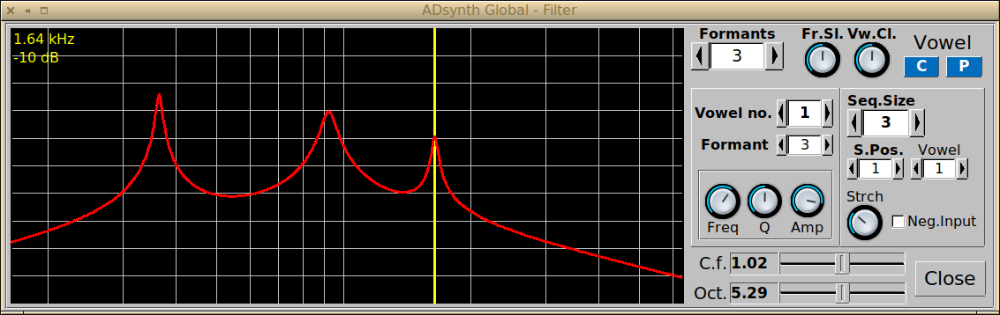

These controls are identical across all engines and also available in the DynFilter effect (see Effects)
Category: Filter category: Analog, Formant or State Variable (StateVar)
St.: Filter stages (1 to 5)
Filter Type or Edit This depends on the selected filter category. For Analog and StateVar various filters can be selected. For Formant a windows enabling to graphically edit the formants is opened
C.freq/BS.pos: Centre Frequency for Analog and SateVar. Base position of the vowel sequence for Formant
Q: Q factor for the filter
V.SensA.: Velocity sensing. How much the filter is influenced by (MIDI) velocity of the note
V.Sns.: Velocity sensing function
Gain: Filter output gain
freq.tr.: Amunt of frequency tracking for the filter. If this is positive (rightmost) higher note frequencies will shift the filte cutoff frequency higher. Default range is -100% to 98% unless the checkbox above ('0 / +') is selected: in this case the range is 0% to 200%
The Formant Filter

When the formant window is selected, the FilterType list is covered with an Edit button, and clicking on this opens the window shown. These controls are additional to the others and adjust individual formants and their vowels.